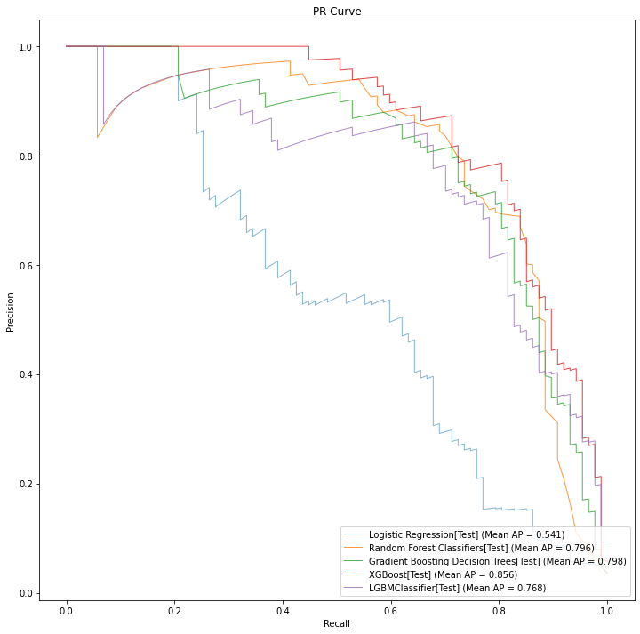
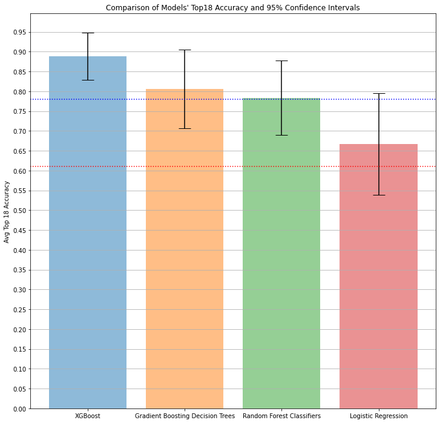

Applied Predictive Maintenance
Part 4 of 6: "Machine Learning Workflows with Sci-Kit Learn to Build Predictive Maintenance Models"
Author: Josh Patterson
Date: Sept 2021
Other entries in this series:
- Part 1: Making the Business Case for Predictive Maintenance
- Part 2: Sensor Data Ingest, Storage, and Analysis with Snowflake
- Part 3: Exploratory Data Analysis
- Part 4: Machine Learning Workflows with Sci-Kit Learn to Build Predictive Maintenance Models
- Part 5: Analyzing the Results
- Part 6: Going to Production with Snowpark
Introduction
In our last post we performed exploratory data analysis (EDA) on the predictive maintenance data and gained insight into the data. In this post we will use the EDA insights to stand up and configure our machine learning workflow.
Achieving our business goals is (and should be) our top priority, so translating our business goals into a set of model performance metrics tells us when we can reliably stop the model building process. From that perspective, we can frame our goal and focus on the key objective for this pilot.
What matters to the line of business?
- Deep Learning? nope.
- Scikit Learn? nope.
- MLOps? nope.
- Imbalanced data? nope.
What matters to the line of business is being able to add the extra manufacturing capacity while reliably minimizing extra operational support costs.
In this article we are going to show:
- How to translate a business goal into a modeling evaluation metric
- How to baseline the modeling process
- How to build a modeling workflow around grid search and k-fold cross validation
- How to evaluate the results
Can We Do This Project Without Machine Learning?
At the start of any project, we should always ask ourselves "Can we do this project without machine learning?"
If "yes", then we should not involve machine learning.
In the case of our predictive maintenance pilot, we potentially could try and come up with some if-thens for different columns (e.g., "heuristic-based methods"), but that might be brittle and hard to maintain. Based on what we saw in the data variables, it might also be hard to hand-code the combination of variables that indicate failure. Given how much nuance is condensed from the vapor of the patterns in the data with machine learning, it is likely a good fit for this problem --- if we can achieve performance on the problem that makes us relevant in a business sense.
Let's kick off by focusing on what the line of business is most interested in (detecting enough failures) and how to translate that into a modeling evaluation metric.
Translating Business Goals Into Modeling Evaluation Metrics
To build our modeling evaluation metric let's start off by reviewing the goals for the pilot as defined by the line of business.
In this pilot we get the opportunity to present the line of business every day with 18 machines (18 is equal to the number of machines we have budget to repair each night) that our pilot system projects to be the most likely to fail in the next 24 hours.
Out of those 18 machines the maintenance team works on:
- minimal goal: have selected 11 machines (in the top 18, 61% correct for top18) that actually were going to fail
- stretch goal: have selected 14 machines (in the top 18, 78% correct for top18) that actually were going to fail
The company is willing to pay for extra overtime during the next day to fix the 5% of days (e.g., 18 days a year) that the system is wrong and performs possibly worse, missing machines that will fail (some of this will even out when the model performs better than its average case top18 accuracy, as well).
With the above context in mind, we set off with a goal of producing a system capable of identifying at least 11, up to 14, machines out of 18 total predictions that will fail (minimum goal: 61% accuracy in the top 18 predictions ranked by estimated probability). This accuracy measure needs to be correct 95% of the days of the year as well.
A Note About Data Distributions
It's worth noting that for the model's top 18 predictions to be 61% correct 95% of the time, the distribution of the data in our sample (e.g., "training data") has to stay consistent with the larger population of the data (e.g., "data produced by the manufacturing machines in the future"). If the data produced later starts to have a different distribution, then our modelling assumptions will likely break down over time as well.
With our business requirements clearly defined, let's work out how we'll measure this in a machine learning workflow.
Building a Model Evaluation Metric
For simple machine learning evaluation purposes you'll see data scientists use a basic metric such as "accuracy" (total correct / total predictions). However, in this case, we only want the 18 predictions the model is "most sure about", and that is a bit trickier. Most models will output discrete labels by default such as sklearn:
classifications = classifier.predict( Xtest )
In this case we want the raw estimated probability from the model instead of the discrete label classification. To do this, you want to use a different method on your model such as:
class_estimated_prob = classifier.predict_proba( Xtest )
Once we have the estimated probabilities for all of the machine data we can get an estimated probability for failure for every machine and then rank in descending order the most likely to fail. From there, we take the top 18 predictions and that will give us the 18 machines our model think are the most likely to fail in the next 24 hours. For the purposes of (final) model comparison/evaluation, these are the only predictions that matter to our evaluation process.
Once we have the estimated probabilities from our classifier, we will sort descending the predictions by "estimated probability". Think of this as a "predictive maintenance queue"; the better our model is, the more the model will produce more "failure" true positives at the "front of the queue".
In this case we simplied this calculation for you with our ml-tools library:
probas_ = classifier.predict_proba( Xtest )
prediction_est_prob = probas_[:, 1]
confusion_matrix = model_valuation.standard_confusion_matrix_for_n_ranked_instances(ytest, prediction_est_prob, 0.1, 18)
[[tp, fp], [fn, tn]] = confusion_matrix
total_predictions = (tp + tn + fp + fn)
acc_top_N_predictions = (tp + tn) / (tp + tn + fp + fn)
The code sample from above is from the companion example notebook that goes with this article. It pulls the top 18 predictions and then computes the accuracy score as acc_top_N_predictions.

When Model Accuracy is a Misnomer
Accuracy as a modeling metric can produce worthless models when training on imbalanced datasets where the distribution of examples across the classes is not equal.
Accuracy is often used earlier in machine learning when dealing with examples where the distribution of the classes is equal, so that's why practitioners tend to start with it as an evaluation metric.
Your accuracy score during evalution on imbalanced data may report 95% or more, but this is trivial to accomplish in highly imbalanced datasets because the model only has to learn to predict the majority class every time to get a high accuracy score. Thus, accuracy becomes misleading in many modeling situations --- especially considering how prevaliant imbalanced data is in the wild.
Just remember: if you are trying to predict the minority class im an imbalanced dataset, accuracy will not be a good evaluation metric to use. It's worth noting that in this article we're not using "accuracy" as canonically defined; We're looking at how many correct predictions are in the top 18 of the highest estimated probability for the minority class.
Our business objectives, financial goals, and cost-benefit information tell us when to "stop" modeling (as opposed to a Kaggle-style competition where everyone keeps trying to eek out 0.05% more accuracy, for instance).
Now that we have an specific way to evaluate how close we are to our business goal with a given model, let's move on to baseline our modeling workflow with some simple models.
Baselining Our Modeling Process
Anytime you start out with a new modeling process you should baseline the dataset with a simple dummy model. This is a great practice because if more complex models can't beat simple no-effort models we know instantly they are not that good.
For instance, if our metric is accuracy and we have an imbalanced dataset, our baseline model could easily just predict the minority class and have a high accuracy. Any model we trained after that would need to be able to classify all of those negative instances along with picking up at least some of the true positive instances. Even picking up a few true positives would likely only change the accuracy score a trivial amount.
Defining an evaluation metric and baselining a modeling process go hand in hand. In many cases for imbalanced datasets, we should look at other evaluation metrics such as precision-recall area under the curve (PR-AUC). Metrics such as these better reflect how a model performs with respect to the tradeoffs of precision and recall. A metric such as PR-AUC also better indicates how well a model picks up the rare true positives while correctly predicting the many true negatives.
Let's now look at how we can stand up the simplest baseline model possible.
Baselining with SKLearns Dummy Model
We'll use Sklearn's DummyClassifier as our first attempt at a baseline model. As the documentation states,
"DummyClassifier is a classifier that makes predictions using simple rules" and you can configure the rules so that the classifier will behave certain ways. For the purposes of this section, we're going to use the setting
most_frequent as this always predicts the most frequent label in the training set.
Converting Dataframes into Vectors
We don't spend a lot of time explaining it here, but in the notebook we use sklearn_pandas's DataFrameMapper to do per column feature processing. Check out the notebook to see the details.
Beyond that, our performance metric is top18 accuracy; to get that we dont use a standard confusion matrix because we dont care about using the default model threshold
...
from sklearn.dummy import DummyClassifier
dummy_model = DummyClassifier(strategy='most_frequent',random_state=0)
k = 10
cv = StratifiedKFold( n_splits=k )
for i, (train_index, test_index) in enumerate(cv.split(X, y)):
# convert the data indexes into references
Xtrain, Xtest = X.iloc[train_index], X.iloc[test_index]
ytrain, ytest = y.iloc[train_index], y.iloc[test_index]
# fit the model on the training data (Xtrain) and labels (ytrain)
dummy_model.fit( Xtrain, ytrain.values.ravel() )
# now get the probabilites of the predictions for the text input (data: Xtest, labels: ytest)
probas_ = dummy_model.predict_proba( Xtest )
prediction_est_prob = probas_[:, 1]
scmtrx_lr_full_testset = model_valuation.standard_confusion_matrix_for_n_ranked_instances(ytest, prediction_est_prob, 0.1, 18)
[[tp, fp], [fn, tn]] = scmtrx_lr_full_testset
total_predictions = (tp + tn + fp + fn)
acc_top_N_predictions = (tp + tn) / (tp + tn + fp + fn)
...
So this dummy model happens to get a really great accuracy score on the full dataset. However, if we look at the confusion matrix breakdown of a cross validation fold, we see:
The problem with the code above is that the dummy model reports a high full dataset accuracy, but a poor top18 accuracy --- it never predicts a positive (e.g., "failure") case. This a great example of how accuracy can trick us if we are not paying attention. Most of the time, functionally we use a dummy model as a "placeholder" for our baseline -- can we do better than predict the majority class?
Using Cross Validation to Evaluate Classifiers
Cross validation is a key standard for estimating the test error of a machine learning model. It works by partitioning a dataset into k equal-sized subsets ("folds"). We then train our model on the subsets k times, leaving 1 subset out each time to use as the test set. At the end we average the k error scores to get an estimated error score for the model on the entire dataset. This estimated error score gives an unbiased estimate of the test error with lower variance than a single train/test split could give us.
Another interesting note about cross validation is that once we have scored multiple models and we've chosen the model (with hyperparameters) that we want to use, we don't use an individual fold as the final model. We disgard the previous models and re-train the selected model architecture using the whole dataset.
Stone, M. (1974). Cross-validatory choice and assessment of statistical predictions. Journal of the Royal Statistical Society. Series B (Methodological), 36(2):111–147.
Let’s now move to a more realistic baseline model by using a Logistic Regression model.
Baselining Our Model With Logistic Regression
Logistic Regression is a great baseline model as its simple, easy to use, and well-known. Before we do that, we want to highlight a helper function we've provided that will take a sklearn classifier and parameters and compute:
- the average score across k-folds
- the standard error of the error scores
- a 95% confidence interval for the standard error
def calculate_cv_standard_error_ci(cv, model, X, y, k, top_N_predictions):
stats = list()
for i, (train_index, test_index) in enumerate(cv.split(X, y)):
# convert the data indexes into references
Xtrain, Xtest = X.iloc[train_index], X.iloc[test_index]
ytrain, ytest = y.iloc[train_index], y.iloc[test_index]
print("Running CV Fold-" + str(i))
# fit the model on the training data (Xtrain) and labels (ytrain)
model.fit( Xtrain, ytrain.values.ravel() )
# now get the probabilites of the predictions for the text input (data: Xtest, labels: ytest)
probas_ = model.predict_proba( Xtest )
prediction_est_prob = probas_[:, 1]
scmtrx_lr_full_testset = model_valuation.standard_confusion_matrix_for_n_ranked_instances(ytest, prediction_est_prob, 0.1, top_N_predictions)
[[tp, fp], [fn, tn]] = scmtrx_lr_full_testset
total_predictions = (tp + tn + fp + fn)
acc_top_N_predictions = (tp + tn) / (tp + tn + fp + fn)
stats.append(acc_top_N_predictions)
'''
print("Logistic Regression (full test set): ")
print("total_predictions: " + str(total_predictions))
print("TP: " + str(tp))
print("TN: " + str(tn))
print("FP: " + str(fp))
print("FN: " + str(fn))
'''
mean_score = np.mean(stats)
std_dev_score = np.std(stats)
standard_error_score = (1/np.sqrt(k)) * std_dev_score
# https://en.wikipedia.org/wiki/Standard_error#:~:text=Assumptions%20and%20usage%5Bedit%5D
# https://en.wikipedia.org/wiki/1.96
# 95% of values will lie within ±1.96
ci_95 = 1.96 * standard_error_score
#print("CI Ranges 95%:")
low_end_range = mean_score - ci_95
high_end_range = mean_score + ci_95
return mean_score, std_dev_score, standard_error_score, ci_95, low_end_range, high_end_range
Standard Error and confidence intervals are a way we can communicate to the business unit how certain this model is in its predictions.
Building Confidence Intervals for Cross Validation Error Estimation
There are multiple ways to build confidence intervals for an error estimate in machine learning training. For a broader discussion of this topic, check out the page on "Confidence Intervals for Cross Validation Error Estimates" in our online data science book.
Standard error "of a statistic (usually an estimate of a parameter) is the standard deviation of its sampling distribution or an estimate of that standard deviation. If the statistic is the sample mean, it is called the standard error of the mean (SEM)" (source: wikipedia.org)
Standard error measures the accuracy of how a data sample represents the larger population of data. It is the approximate standard deviation of a statistical sample. Put another way, the standard error is the deviation of a sample mean from the actual population mean.
(also note, we're taking the "sample standard deviation" here of the sample represented by the training records; we don't have the full population of data to train on, so our training records, from a statistical viewpoint, are considered a "sample")
We can compute the standard error of the cross validation error estimate by dividing the sample standard deviation by the square root of the number of observations. (another nice write-up on the topic here.)
With the standard error of the sample mean, we can then calculate the 95% confidence intervals for our cross validation error estimate (e.g., "95% confidence interval for the population mean", or to put it another way: "confidence intervals for the error estimate of the full population of data our model might encounter in the wild").
A confidence interval gives us a range of values that bound a statistic's mean (above and below). These bounds likely contain the unknown population parameter we're interested in measuring. These bounds (e.g., "confidence interval") refer to a percentage of probability ("certainty") that the confidence interval range would capture the true population parameter if we were to draw random samples from the population a lot of times.
If confidence level refers to "percentage of probability" of certainty, then for a 95% confidence interval we can assume that 95% of the time our accuracy should be between the lower and upper bound of the estimate.
Other methods to build error confidence intervals include:
- Bootstrap
- Binomial proportion confidence intervals
- Student's t distribution confidence intervals
Below you can see a snippet of code where we are running 10-Fold cross validation with SKLearn's Logistic Regression:
classifier_kfold_LR = LogisticRegression(solver='lbfgs')
# test method for cv-se-ci
mean_score_lr, std_dev_score_lr, standard_error_score_lr, ci_95_lr, low_end_range_lr, high_end_range_lr = calculate_cv_standard_error_ci(cv, classifier_kfold_LR, X, y, k, 18)
print("\n\navg top 18 acc: " + str("{:.4f}".format(mean_score_lr)))
print("\n\nSTD DEV: " + str(std_dev_score_lr))
print("\n\nStandard Error (Accuracy) Across All Folds: ( " + str("{:.4f}".format(standard_error_score_lr)) + ")")
print("High: " + str(high_end_range_lr))
print("Low : " + str(low_end_range_lr))
Using the helper function we can quickly compute the average top 18 accuracy, the standard error, and the 95% confidence interval, as shown below:
The logistic regression model does a decent job of modeling the imbalanaced predictive maintenance data (66.7% accuracy on top 18 predictions), but the error bound is with the 95% confidence interval is 79.4% to 53.9%.
If the confidence level refers to "percentage of probability" of certainty, then our error estimate at 95% confidence interval tells us we can assume that 95% of the time our accuracy should be between the lower and upper bound of the estimate.
From that perspective it's difficult to go back to the line of business and say "this model will do hit our performance goal ... some of the time". What we need is a model that will do no worse than our minimum performance goal 95% of the time, so it's worth spending some effort to see if we can get a better lower bound on the model performance.
Imbalanced data problems can be tough as shown with scores with this wide of variance. At this point we have a nice baseline model but we know we're going to have to put a little more effort into modeling to get closer to our minimum pilot goal, so let's look at doing some light grid search across a few different model architectures that have been known to perform well.
Building a Preditive Maintenance Machine Learning Workflow with Grid Search and Sci-Kit Learn
With our evaluation metric and model baseline in hand, we can now let grid search explore hyperparameter space a bit with some models that are known to perform well based on Kaggle competitions.
We will use the following models:
- XGBoost
- Gradient Boosting Decision Trees
- Random Forests
- Light GBM
- Logistic Regression (for relative comparison)
A generalized grid search workflow might look like the following:
- exploratory data analysis
- split data into train, validate, and test datasets
- normalize, standardize features
- use grid search to find decent models based on our data
- Manually tune the top 3-4 models, perform feature analysis
- do we have enough predictive value yet? no? train more. yes? then stop
Grid search gives us the option to provide a specific metric to guide its direction in hyperparameter search space. We can use simple options such as "accuracy", but depending on your training goal other options may help more.
In our EDA work we also surface that the dataset was imbalanced (only 3% positive cases). As discussed previously in this article, the accuracy metric likely will not give great feedback for an imbalanced dataset as it treats all classes equally important. We want to push grid search towards hyperparameters that will focus on detecting the minority (e.g., "machine failure") class. This task is challenging because there are not many positive classes in the dataset.
An alternative to the ROC curve is the precision-recall curve. The precision-recall curve focuses on the positive (minority) class only and is useful for imbalanced classification problems such as predictive maintenance (e.g., "failure", "no failure").
The area under the precision curve (PR-AUC) sumarizes the performance of the classifier as a single number. sklearn provides an a different calculation of PR-AUC called "average precision score". Average precision summarizes a precision-recall curve as the weighted mean of precisions achieved at each threshold. (reference: Cross Validated discussion).
Average Precision vs Top-18 Accuracy
So while we're ultimately after a model that predicts well in its most confident top 18 predictions, the average precision metric indicates which models are doing better at predicting the rare class in an imbalanced dataset. We'll use average precision to guide grid search towards hyper parameters that will pick up the rare machine failure classifications and then evaluate (via top-18 accuracy) the model for each architecture that had the best average precision score.
Now that we've decided on the best way to guide grid search that aligns with our business goal metrics, let's configure grid search and see how it goes.
Building a Grid Search Workflow
In the notebook code excerpt below we can see the relevant portion that registers the models we want to test out and configures GridSearchCV. There is an extended portion of code before this section that configures which hyperparameters we want to explore, but we'll leave that inspection to the reader as a further exercise.
...
models_opt = []
models_opt.append(('Logistic Regression', LogisticRegression(), LR_params))
models_opt.append(('Random Forest Classifiers', RandomForestClassifier(), RF_params))
models_opt.append(('Gradient Boosting Decision Trees', GradientBoostingClassifier(), GBC_params))
models_opt.append(('XGBoost', xgb_estimator, XGB_params))
models_opt.append(('LGBMClassifier', lightGBM_mdl, lgbm_gs_params))
# now set up Cross Validation parameters
results = []
names = []
best_models = []
plt.figure(1)
fig_pr, ax_pr = plt.subplots(1,1,figsize = (12,12))
# now let's run Grid Search for each model listed in model_opts
for name, model, params in models_opt:
start_time = datetime.datetime.now()
model_grid = GridSearchCV(model, params, cv=cv, scoring='average_precision') #
model_grid.fit(x_train_scaled, y_train_scaled)
...
When you run the notebook on Google Colab, it will run in this section for a while and you'll see some console output in the notebook. You can largely ignore that output, and focus on the precision recall curve that is generated at the end. Below we can see the best models found for each architecture as compared by their respective precision recall curves.
As we discussed previously, the precision recall curve is a great want to compare models for a given imbalanced classification problem. Curves that reach farther out to the northeast corner of the graph area better overall and will have better "average precision" scores (closer to 1.0 is better).
What Does GridSearchCV Return to Us?
If you will recall, earlier in this article we wrote about how the final model in cross validation would be trained on the full dataset after the error estimate was calculated.
The is exactly what GridSearchCV returns to us as the best model per model type. Unless you tell it explicitly not to, GridSearchCV will take the best hyperparameters found for the model type and refit the entire dataset with the model type and hyperparameters.
When Do We Stop Modeling?
EDA informs us on how the better places to start our modeling journey, and our evaluation metric helps us know when we arrive there.
Average precision (and precision recall curves) are great tools to work with inside a data science group, but they are terrible metrics to send to a business group. We use these scores to find the best hyperparameters for imbalanced classification. Once we find those model hyperparameters, we then calculate the Top 18 failure score which we've established as something that will directly be application to the line of business.
Alternatively, we could just train until we hit some arbitrary metric goal or ... we run out of cloud budget. From that perspective, its best to continually check against the business metrics to see if we've met our business goals within our required confidence intervals.
Earlier in this article we established that the confidence level (of a confidence interval) refers to "percentage of probability" of certainty. Our error estimate at 95% confidence interval tells us we can assume that 95% of the time our accuracy should be between the lower and upper bound of the estimate. Given this, we need a model that has a 95% confidence interval lower bound that is greater than our minimum performance on the top 18 failure ranked failure predictions. If we have a model that meets or exceeds these conditions then we can move on to the next stage of our pilot program.
In the bar chart below we see the 3 best models (with confidence interval bars) as ranked by their average precision score along with the logistic regression model for reference.
As you can see in the bar chart above, the 3 top grid search models (other than logistic regression) all had their lower bound on the 95% confidence interval exceed the minimum performance (the dotted horizontal red line).
When we have the option to choose from multiple candidates with acceptable scores, we normally would select the model with the highest evaluation metric score. Here, unsurprisingly, XGBoost performed the best --- and also had the best (e.g., "tightest") confidence interval.
Normally in a grid search workflow we might want to do some manual tuning or further analysis, but at this point our team has a model (XGBoost) that should realistically hit our business goals (at least 83% accurate on top18 predictions 95% of the time), so we can pause our modeling efforts (for now).
MLOps Questions?
Are you looking for a comparison of different MLOps platforms? Or maybe you just want to discuss the pros and cons of operating a ML platform on the cloud vs on-premise? Sign up for our free MLOps Briefing -- its completely free and you can bring your own questions or set the agenda.
Summary and Next Steps
In this point we built several quality models with grid search to model the imbalanced predictive maintenance dataset in snowflake.
In the next post we'll review our business plan with the line of business and make a decision on if we can safely put this pilot program into production.